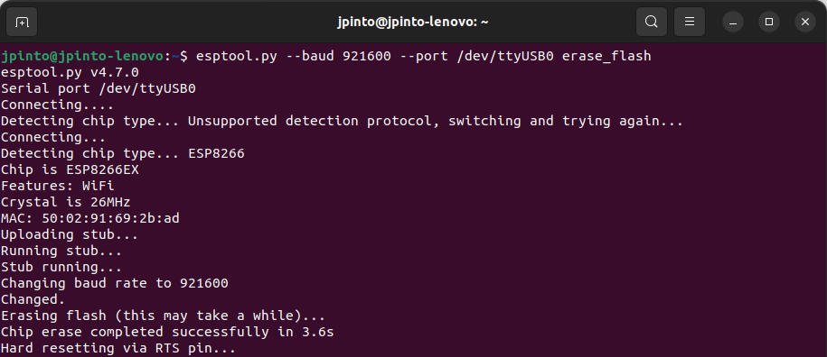
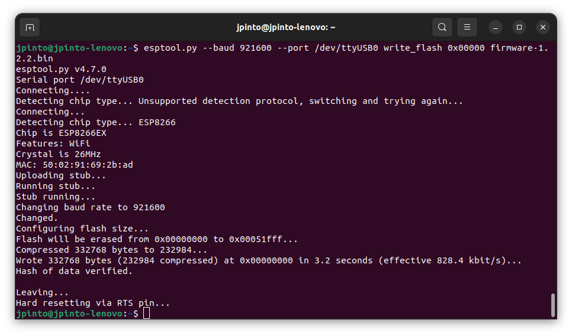

Drone Assembly
Bill of Materials
In order to replicate the Kopis setup adopted on the Taguspark Flight Arena, the following components are required:
Wiring Diagram
TODO
Kakute Flight Controller Setup
Two different approaches are considered to setup the Kakute flight controller: 1) using our custom precompiled binaries (recommended), or 2) compiling PX4 from source.
Option 1 - Using custom precompiled binaries (recommended)
We provide some precompiled binaries of the PX4-autopilot source code (release v1.14.2), with some minor corrections and modifications for our specific use case. To flash these custom images, proceed as follows.
Install DFU-Util to flash the bootloader into the Kakute board:
sudo apt-get install dfu-util
Open a terminal, and download the bootloader images into your computer, depending on the required board version. Do not close the terminal once you finish.
# Use these command for the KakuteH7 wget "https://github.com/PegasusResearch/drone_configs/raw/refs/heads/main/Kopis/PX4-Autopilot(v1.14.2)/KakuteH7/holybro_kakuteh7_bootloader.bin" # Use this command for the KakuteH7v2 wget "https://github.com/PegasusResearch/drone_configs/raw/refs/heads/main/Kopis/PX4-Autopilot(v1.14.2)/KakuteH7v2/holybro_kakuteh7v2_bootloader.bin"
Connect the Kakute to the computer using a USB cable and put the board in bootloader mode by pressing the button on the board while connecting the cable. Flash the bootloader into the Kakute:
# Use these commands for the KakuteH7 dfu-util -a 0 --dfuse-address 0x08000000:force:mass-erase:leave -D ./holybro_kakuteh7_bootloader.bin dfu-util -a 0 --dfuse-address 0x08000000 -D ./holybro_kakuteh7_bootloader.bin # Use these commands for the KakuteH7v2 dfu-util -a 0 --dfuse-address 0x08000000:force:mass-erase:leave -D ./holybro_kakuteh7v2_bootloader.bin dfu-util -a 0 --dfuse-address 0x08000000 -D ./holybro_kakuteh7v2_bootloader.bin
After flashing the bootloader, reboot the Kakute without pressing the button. Download the firmware for the KakuteH7 or for the KakuteH7v2 and load it to the board using QGroundControl (instrutions here). Note that you want to install a custom version (specific instructions here).
After having the firmware installed, connect the Kakute to the computer and open QGroundControl.
Load the Kopis parameters from the configuration file kopis7.params.
Change the MAV_SYS_ID parameter to the ID of the new vehicle.
Option 2 - Compiling PX4 from source
Configure the KakuteH7/KakuteH7v2 flight controller with PX4 firmware (v1.14.2), by following the instructions on the PX4 documentation. Start by cloning and compiling the PX4 firmware repository:
# Clone PX4 firmware repository git clone https://github.com/PX4/PX4-Autopilot.git cd PX4-Autopilot git checkout v1.14.2
Compile the bootloader and the firmware for the flight controller. Use the commands depending on the board version (KakuteH7/KakuteH7v2):
# Use these commands to compile the bootloader and the firmware for the KakuteH7 make holybro_kakuteh7_bootloader make holybro_kakuteh7_default # Use these commands to compile the bootloader and the firmware for the KakuteH7v2 make holybro_kakuteh7v2_bootloader make holybro_kakuteh7v2_default
Install DFU-Util to flash the bootloader into the Kakute board:
sudo apt-get install dfu-util
Connect the Kakute to the computer using a USB cable and put the board in bootloader mode by pressing the button on the board while connecting the cable. Flash the bootloader into the Kakute:
# Use these commands for the KakuteH7 dfu-util -a 0 --dfuse-address 0x08000000:force:mass-erase:leave -D build/holybro_kakuteh7_bootloader/holybro_kakuteh7_bootloader.bin dfu-util -a 0 --dfuse-address 0x08000000 -D build/holybro_kakuteh7_bootloader/holybro_kakuteh7_bootloader.bin # Use these commands for the KakuteH7v2 dfu-util -a 0 --dfuse-address 0x08000000:force:mass-erase:leave -D build/holybro_kakuteh7v2_bootloader/holybro_kakuteh7v2_bootloader.bin dfu-util -a 0 --dfuse-address 0x08000000 -D build/holybro_kakuteh7v2_bootloader/holybro_kakuteh7v2_bootloader.bin
After flashing the bootloader, reboot the Kakute without pressing the button. Upload the firmware by using QGroundControl or run one of the following commands
# Use this command for the KakuteH7 make holybro_kakuteh7_default upload # Use this command for the KakuteH7v2 make holybro_kakuteh7v2_default upload
After having the firmware installed, connect the Kakute to the computer and open QGroundControl.
Load the Kopis parameters from the configuration file kopis7.params.
Change the MAV_SYS_ID parameter to the ID of the new vehicle.
ESP Configuration
Connect the USB-FDTI cable to the ESP, and turn the switch into the
PROGRAMposition.
Warning
Check whether your ESP runs with 3.3V or 5V before connecting the FDTI cable

Install the esptool by running the following command:
pip install esptool
Download the custom compiled firmware from here.
Erase the ESP flash memory by running the following command:
esptool.py --baud 921600 --port /dev/ttyUSB0 erase_flash
{kind=link}
Flash the firmware into the ESP using the following command:
esptool.py --baud 921600 --port /dev/ttyUSB0 write_flash 0x00000 firmware-1.2.2.bin
{kind=link}
Reboot the ESP with the switch in the
UARTposition.Connect the computer to the
PixRacerwifi network generated by the ESP. The password ispixracer.
{kind=link}
On your browser, go to the IP address
192.168.4.1and click on theSetuplink. This will open a page with the default configurations.
{kind=link}
Change the configurations according to the image bellow, by setting the
UDP Port,AP SSID``and ``Station IPaccording to the standard adopted in the table above.
{kind=link}
If you have any questions or need help with the setup, please check the ardupilot reference page.